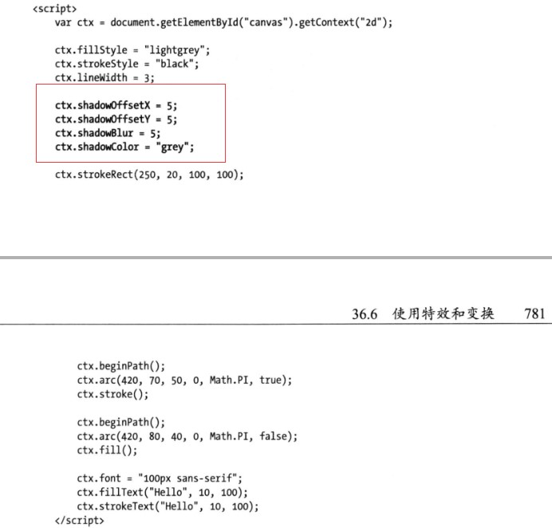

HTML5-Canvas入门
canvas是HTML5定义的一种可供绘图的元素，我们用JavaScript对它进行配置和操作。它很灵活，相对容易使用，并且提供了足够多的功能来代替flash制作某些类型的富内容。
开始使用（绘制矩形）
canvas元素只有height和width两个属性，元素里的内容会在浏览器不支持此元素时作为备用内容显示。当我们使用JavaScript获取该元素时，返回一个HTMLCanvasElement对象，下面是这个对象的成员：
| 成员 | 说明 | 返回 |
|---|---|---|
| height | 对应于height属性 | 数值 |
| width | 对应于width属性 | 数值 |
| getContext(context) | 为画布返回绘图上下文 | 对象 |
其中关键的方法是getContext。为了获得二维上下文对象，我们需要给这个方法传递参数2d。一旦得到这个上下文，就可以开始绘图了。下面是例子：
效果查看绘制矩形
绘制矩形的相关方法：
| 成员 | 说明 | 返回 |
|---|---|---|
| clearRect(x,y,w,h) | 清除指定的矩形 | void |
| fillRect(x,y,w,h) | 绘制一个实心矩形 | void |
| strokeRect(x,y,w,h) | 绘制一个空心矩形 | void |
设置画布绘制状态
绘图操作由绘制状态加以配置。后者是一组属性，指定了从线条宽度到填充色的所有参数。当我们绘制一个图形时，就会用到绘制状态的当前设置。下面是一个示例：
当我使用strokeRect方法时，lineWidth属性的当前值就会用于绘制矩形。下表展示了基本的绘制状态属性，还有一些属性在更高级的功能会用到：
| 名称 | 说明 | 取值 |
|---|---|---|
| fillStyle | 获取或设置用于实心图形的样式 | 颜色值（默认black)、渐变对象、pattern对象 |
| lineJoin | 获取或设置线条与图形连接时的样式 | round（圆角）、bevel（棱角）、miter（尖角，默认值） |
| lineWidth | 获取或设置线条的宽度 | 数值（默认1.0） |
| strokeStyle | 获取或设置用于线条的样式 | 颜色值（默认black)、渐变对象、pattern对象 |
- 设置线条连接样式
lineJoin属性决定了相互连接的线条应该如何绘制，它有三个值：round（圆角）、bevel（棱角）、miter（尖角）。 - 设置填充和笔触（线条）样式
改变fillStyle属性即改变填充的颜色，改变strokeStyle即改变笔触颜色。请自行尝试 使用渐变
除了纯色，我们还可以把填充和笔触样式设置成渐变色。渐变是两种或更多颜色之间的渐进转变。canvas元素支持两类渐变：线性和径向。
两个方法都返回一个CanvasGradient对象。
下面是线性渐变的例子：12345678910<html><head><meta http-equiv="Content-Type" content="text/html; charset=UTF-8"><title>gradient</title></head><body><canvas id="canvas" width="500" height="140"></canvas></body></html>效果请查看：线性渐变效果
也可以设置渐变在一个小矩形范围内。
效果为
下面是径向渐变的例子：1234567891011121314151617181920<html><head><meta http-equiv="Content-Type" content="text/html; charset=UTF-8"><title>RunJS</title></head><body><canvas id="canvas" height="200" width="500"></canvas><script>var ctx = document.getElementById("canvas").getContext("2d");//第一第二个参数是起点圆的圆心坐标，第三个参数是起点圆的半径。第四第五个参数是终点圆的圆心坐标，第六个参数是终点圆的半径var grad = ctx.createRadialGradient(250,70,20,200,60,80);grad.addColorStop(0,"#f00");grad.addColorStop(0.5,"#fff");grad.addColorStop(1,"#000");ctx.fillStyle = grad;ctx.fillRect(0,0,500,160);</script></body></html>效果请查看径向渐变效果
一般而言，径向渐变的终点圆要包含起点圆，当我们给这个渐变添加颜色点时，它们会被放置在起点圆边界（该点的值为0）和终点圆边界（该点的值为1）之间的一条线段上。若终点圆没有包含起点圆，结果会很混乱。- 使用图案
除了纯色和渐变之外，我们还可以创建图案（pattern）。具体做法是使用画布上下文对象所定义的createPattern方法。2D绘图上下文定义了对三种图案类型的支持：图形、视频和画布。
要将图像作为图案，需要把一个HTMLImageElement对象作为第一个参数传递给createPattern方法，第二个参数是重复样式。下面是综合例子：1234567891011121314151617181920212223<html><head><meta charset="UTF-8"><title></title></head><body><img hidden="" src="http://www.w3school.com.cn/i/lamp.gif"/><canvas id="canvas" width="500" height="300"></canvas><script type="text/javascript">window.onload = function(){//注意,一定要在DOM加载完之后,否则创建pattern会失败var canvas = document.getElementById("canvas");var ctx = canvas.getContext("2d");ctx.clearRect(0,0,canvas.width,canvas.height);var imgElem = document.getElementsByTagName("img")[0];var pattern = ctx.createPattern(imgElem,"repeat");ctx.fillStyle = pattern;ctx.fillRect(0,0,500,300);}</script></body></html>
保存和恢复绘制状态
可以用下表介绍的方法保存绘制状态，稍后再返回。
| 值 | 说明 |
|---|---|
| save() | 保存绘制状态属性的值，并把它们推入状态栈 |
| restore() | 取出状态栈的第一组值，用它们来设置绘制状态 |
绘制状态保存时会被存放在一个后进先出的栈中，意思是我们用save方法最后保存的状态会被restore方法首先进行恢复。
绘制图像
可以用drawImage方法在画布上绘制图像。这个方法需要三个、五个或者九个参数。第一个参数始终是图像的来源，它可以是代表img、video、或者其他canvas元素的DOM对象。
使用图片图像：
123456789101112131415161718192021222324252627<html><head><meta charset="UTF-8"><title></title><style type="text/css">canvas{border: 1px solid #ccc;}</style></head><body><img hidden="" src="http://www.w3school.com.cn/i/lamp.gif"/><canvas id="canvas" width="500" height="300"></canvas><script type="text/javascript">window.onload = function(){var ctx = document.getElementById("canvas").getContext("2d");var imageElem = document.getElementsByTagName("img")[0];//当只有三个参数时,第二三个参数指定图像开始绘制的坐标,绘制的图像大小为原始大小ctx.drawImage(imageElem,10,10);//当只有五个参数时,第二三个参数指定图像开始绘制的坐标,第四五个参数指定绘制图像的大小ctx.drawImage(imageElem,50,10,50,50);//当有九个参数时,请自行谷歌}</script></body></html>使用视频图像
当图像的来源是video时，这样做其实是对视频的当前帧进行截图。- 使用画布图像 1234567891011121314151617181920212223242526272829303132333435363738394041424344454647<html><head><meta charset="UTF-8"><title></title><style type="text/css">body > *{float: left;}canvas{border: 1px solid #e5e5e5;}</style></head><body><video id="vid" width="800" height="400" hidden="" src="../img/Clip_1080_5sec_10mbps_h264.mp4">当前浏览器不支持 video直接播放</video><canvas id="canvas1" width="360" height="240"></canvas><button id="pressme">点击我</button><canvas id="canvas2" width="360" height="240"></canvas><script type="text/javascript">var srcCanvasElem = document.getElementById("canvas1");var srcCtx = srcCanvasElem.getContext("2d");var targetCanvasElem = document.getElementById("canvas2").getContext("2d");var videoElem = document.getElementById("vid");targetCanvasElem.strokeStyle = "black";targetCanvasElem.lineWidth = 10;var width = 100;var height = 10;srcCtx.lineWidth = 5;srcCtx.strokeStyle = "red";setInterval(function(){srcCtx.drawImage(videoElem,0,0,360,240);srcCtx.strokeRect(180-(width/2),120 - (height/2),width,height);},25);setInterval(function(){width = (width + 1) % 200;height = (height + 3) % 200;},100)document.getElementById("pressme").onclick = function(){targetCanvasElem.drawImage(srcCanvasElem,0,0,360,240);targetCanvasElem.strokeRect(0,0,360,240);}</script></body></html>
用路径绘图（重要）
之前的示例都依靠绘制矩形实现，矩形是一种有用的图形，但有时我们需要用到的是其他图形。对此，canvas提供了路径绘图。下面是绘制基本路径的可用方法：
| 名称 | 说明 | 返回 |
|---|---|---|
| beginPath() | 开始一条新路径 | void |
| closePath() | 尝试闭合现有路径（做法是绘制一条线，连接最后那条线的终点与初始坐标） | void |
| fill() | 填充用子路径描述的图形 | void |
| isPointInPath(x,y) | 如果指定的点在当前路径所描述的图形之内则返回true | 布尔值 |
| lineTo(x,y) | 绘制一条到指定坐标的子路径 | void |
| moveTo(x,y) | 移动到指定坐标而不绘制子路径 | void |
| rect(x,y,w,h) | 绘制一个矩形 | void |
| stroke() | 给子路径描述的图形绘制轮廓 | void |
绘制一条路径的基本顺序如下：
- 调用beginPath方法；
- 调用moveTo方法移动到起点；
- 用arc和lineTo等方法绘制子路径；
- 调用closePath方法（可选）；
- 调用fill或stroke方法。
下面是综合示例：
- 绘制矩形
rect方法会给当前路径添加一条矩形的子路径。如果需要一个单独的矩形，之前介绍的fillRect和strokeRect方法是更合适的选择。123456789101112131415161718192021222324252627<html><head><meta charset="UTF-8"><title></title></head><body><canvas id="canvas" width="400" height="300"></canvas><script type="text/javascript">var ctx = document.getElementById("canvas").getContext("2d");ctx.fillStyle = "red";ctx.strokeStyle = "black";ctx.beginPath();ctx.moveTo(10,10);ctx.lineTo(100,10);ctx.lineTo(100,100);ctx.closePath();//绘制矩形ctx.rect(100,10,100,90);ctx.rect(100,100,130,30);//填充颜色ctx.fill();//绘制轮廓ctx.stroke();</script></body></html>
绘制圆弧
我们使用arc和arcTo方法在画布上绘制圆弧，不过这两种方法绘制圆弧的方式会有所不同。
| 名称 | 说明 | 返回 |
|---|---|---|
| arc(x,y,rad,startAngle,endAngle,diretion) | (x,y)指定圆弧的圆心坐标，半径为rad，始角度为startAngle，结束角度为endAngle，可选参数direction指定了圆弧方向 | void |
| arcTo(x1,y1,x2,y2,rad) | 绘制一段半径为rad，经过(x1,y1)，直到(x2,y2)的圆弧 | void |
使用arcTo方法：
绘制圆弧的一个复杂例子（移动鼠标看到变换）：123456789101112131415161718192021222324252627282930313233343536373839404142434445464748495051525354555657<html><head><meta charset="UTF-8"><title></title></head><body><canvas id="canvas" width="500" height="140"></canvas><script type="text/javascript">var canvasElem = document.getElementById("canvas");var ctx = canvasElem.getContext("2d");var point1 = [100,10];var point2 = [200,10];var point3 = [200,110];draw();canvasElem.onmousemove = function(e){if(e.ctrlKey){point1 = [e.clientX,e.clientY];}else if(e.shiftKey){point2 = [e.clientX,e.clientY];}else{point3 = [e.clientX,e.clientY];}ctx.clearRect(0,0,500,140);draw();}function draw(){ctx.fillStyle = "yellow";ctx.strokeStyle = "black";ctx.lineWidth = 4;//绘制圆弧ctx.beginPath();ctx.moveTo(point1[0],point1[1]);ctx.arcTo(point2[0],point2[1],point3[0],point3[1],50);ctx.stroke();//绘制三个点drawPoint(point1[0],point1[1]);drawPoint(point2[0],point2[1]);drawPoint(point3[0],point3[1]);//绘制连接三个点的线ctx.beginPath();ctx.moveTo(point1[0],point1[1]);ctx.lineTo(point2[0],point2[1]);ctx.lineTo(point3[0],point3[1]);ctx.stroke();}//绘制三个点function drawPoint(x,y){ctx.lineWidth = 1;ctx.strokeStyle = "red";ctx.strokeRect(x - 2, y - 2,4,4);}</script></body></html>效果请查看canvas绘制圆弧
使用arc方法
arc方法使用起来略微简单一些。我们用前两个方法参数指定圆的圆心，第三个参数指定圆的半径，第四第五个参数指定起始和结束角度，最后一个参数指定是顺时针还是逆时针。
上图的开始角度为0，结束角度为1.5PI，方向为顺时针。arc(100,75,50,0,1.5*Math.PI,false);123456789101112131415161718192021222324252627282930313233343536<html><head><meta charset="UTF-8"><title></title></head><body><canvas id="canvas" width="500" height="200"></canvas><script type="text/javascript">var ctx = document.getElementById("canvas").getContext("2d");ctx.strokeStyle = "black";ctx.fillStyle = "steelblue";ctx.beginPath();//圆心x,圆心y,半径,开始角度,结束角度,逆时针ctx.arc(100,100,60,0,Math.PI * 2,true);ctx.fill();ctx.stroke();//必须重新开始路径,否则会连在一起ctx.beginPath();ctx.arc(230,100,60,Math.PI * 0.5,Math.PI ,true);ctx.closePath();ctx.fill();ctx.stroke();//绘制不规则图形ctx.beginPath();var val = 0;for(var i = 0 ; i < 4 ; i++){ctx.arc(370,100,60,val,val+Math.PI/4,false);val+=Math.PI/2;}ctx.closePath();ctx.fill();ctx.stroke();</script></body></html>效果请查看：arc方法绘制圆弧
绘制贝塞尔曲线
canvas支持绘制两种贝塞尔曲线：三次和二次。我们通过选择一个起点和终点，然后添加一个或多个控制点来形成曲线。下面的表格展示了绘制贝塞尔曲线的方法：
| 名称 | 说明 | 返回 |
|---|---|---|
| bezierCurveTo(cx1,cy1,cx2,cy2,x,y) | 绘制一段贝塞尔曲线到（x,y），控制点为（cx1,cy1）和（cx2,cy2）。 | void |
| quadraticCurveTo(cx,cy,x,y) | 绘制一段二次贝塞尔曲线到点（x,y），控制点为（cx,cy） | void |
下面是三次贝塞尔曲线的示例：
效果请查看：三次贝塞尔曲线
创建剪辑区域
一旦定义了一块裁剪区域，就只有区域内的路径才会显示在屏幕上。
绘制文本
可以在画布上绘制文本。不过这种功能的支持还很初步。
| 名称 | 说明 | 返回 |
|---|---|---|
| fillText(text,x,y,width) | 在位置(x,y)上绘制并填充指定文本。宽度参数是可选的，他设置了文本的宽度上限 | void |
| strokeText(text,x,y,width) | 在位置(x,y)上绘制并描边指定文本。宽度是可选参数 | void |
我们可以使用三种绘制装态属性来控制文本绘制的方式。
| 名称 | 说明 | 返回 |
|---|---|---|
| font | 设置绘制文本时使用的字体 | 字符串 |
| textAlign | 设置文本的对齐方式 | 字符串 |
| textBaseLine | 设置文本的基线：top、bottom、middle等 | 字符串 |
下面是例子：
使用特效和变换
- 使用阴影
可以用四种绘制状态属性来给我们在画布上绘制的图形和文本添加阴影。
下面是例子：
 - 使用透明度
可以用两种方式来给我们绘制的文本和图形设置透明度。第一种使用rgba函数指定一个fillStyle或strokeStyle值，另一种是使用绘制属性globalAlpha。globalAlpha属性的值可以从0（完全透明）到1（完全不透明，这是默认值）。
下面是代码效果：
- 使用合成
可以将透明度与globalCompositeOperation属性结合使用，来控制图形和文本在画布上绘制的方式。 - 使用变换
我们可以给画布应用变换，它会应用到后续所有的绘图操作上。
在这个例子里，我填充并描边了一些文本，然后缩放、平移和旋转了画布，这些操作影响了我接下来绘制的空心矩形和实心矩形。